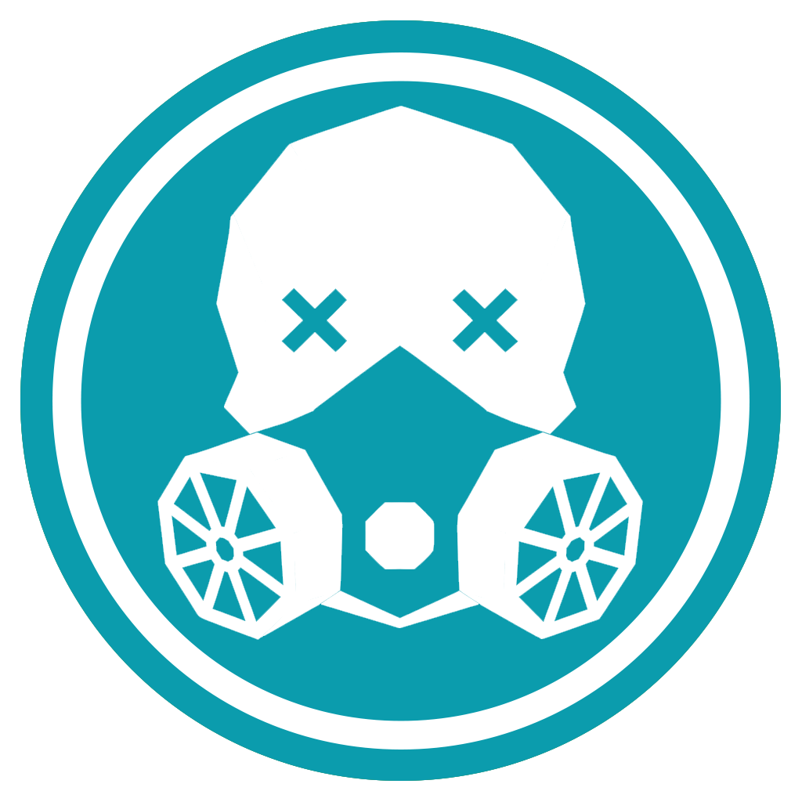

Community Air Reporting Network

We'll set the language based on your device/browser settings.
Auto follows your device's light/dark setting. Smart adapts to ambient light where available, otherwise local time.
How far back the wind trail is drawn on the map. Nearest-station matching always uses up to 12h of history regardless of this setting.
Location access is turned off. To report bad air at your location, enable it in your settings.
Or use the button on the map to drop a pin manually.